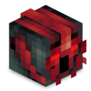

Contatti
GABRYCA

Founder
Creatore del server dalle origini, è colui che mantiene e prende le dicisioni per quello che bisogna fare sul server. Se qualcuno deve comunicare qualcosa di molto importante, prima chieda aiuto ad admin e pluginner, poi a lui, sarà lieto di aiutarvi.
Sfera - zSphere_
Admin
Uno dei due membri dalle origini, è colui che ha assistito a quasi tutta la storia completa del server, non ha mai fatto grossi errori e ha sempre aiutato un po' tutti. Se avete bisogno d'aiuto, potete rivolgervi a lui.
zBatBoy123_
Admin
Il secondo dei due membri dalle origini, si è unito nello staff insieme a Sfera, bravo ed amichevole, è un membro che adora contribuire e aiutare il prossimo.
Emanuele - Xx_WhiteAngel_xX
Pluginner
Un bravo pluginner, Emanuele è un membro presente da circa un anno, ha contribuito molto per il server in diversi ambiti, da quello del building a quello del settaggio tramite config, come tutti è amichevole e simpatico.
iBreak_Neo
Pluginner
Membro espulso e riammesso un paio di volte, contribuisce nel server da molto tempo, anche se non molto attivo, riesce comunque nel suo piccolo a contribuire. Se notate problemi nel settaggio del server, segnalateglieli pure.
Miky88
Bot-Developer
Membro molto giovane e attivo, è il creatore del bot del server discord, insieme a tanti altri, è anche il responsabile discord, perciò se avete consigli, domande o altro riguardo il bot o il server discord, è la persona ideale alla quale rivolgersi.
Samplasion
Bot-Developer
Membro nuovissimo, è un aiutante di Miky88, è anche lui un bot-developer, ma non è un responsabile discord, perciò se dovete chiedergli qualcosa, fatelo solo se è riguardo il bot o qualcosa di semplice.
ValentinaGames07
Moderatore
Molto legata a Emanuele, è l'unico membro dello staff femmina, partecipatrice a diversi eventi nella nostra storia del server, è un moderatore che al momento non ha niente da fare, quindi non ha nemmeno avuto la possibilità di contribuire.
Manuel007
Moderatore
Membro abbastanza vecchio e spesso inattivo per lunghi periodi, ha contribuito in passato nel building, ma adesso è un moderatore e al momento non ha niente da fare, quindi non ha nemmeno la possibilità di contribuire, ma potrebbe comunque buildare...
SkyRich34_
Builder
Antico membro, sopraffatto dalla scuola, è il miglior builder che il nostro server possa aver avuto, ma essendo off per la maggior parte del tempo, non possiamo godere delle sue build.
TheEdison
Builder
Membro attivo, ha fatto in passato molte build, attualmente fermo e non più molto contribuente, è comunque attivo su discord e partecipa alla nostra crescita e avanzamento.